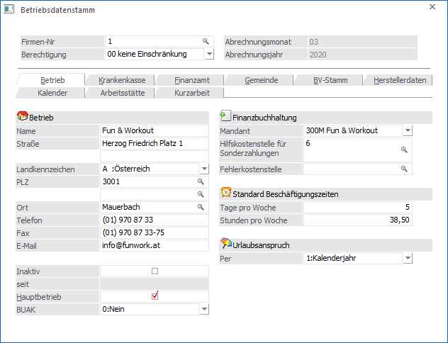
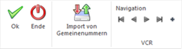

WinLine LOHN ist auf Mehrfirmenverarbeitung (Mandanten) ausgerichtet, d.h. es können mehrere Firmen unabhängig voneinander (abgesehen von Anwendungsparametern) verarbeitet werden. Jeder Mandant ist durch eine Mandanten-Nummer und einen Firmennamen gekennzeichnet. Alle Daten der Firma sind unter der jeweiligen Mandantennummer gespeichert.
Daten, die sich von Mandant zu Mandant unterscheiden sind z.B.:
ü Firmenstamm
ü Arbeitnehmerstamm
ü Firmenkonstanten
ü eventl. Lohnarten
ü eventl. Abrechnungsparameter
ü eventl. Lohngruppen
Der Firmenstamm beinhaltet zentrale Informationen, die für alle Arbeitsgebiete der Firma (des Mandanten) von Bedeutung sind, wie z.B.
ü Firmenanschrift
ü Kostenstellen
ü Sozialversicherung
ü Finanzamt
ü Gemeinden
ü Konstanten
Der Firmenstamm kann im Programmpunkt
1 Stammdaten
1 Mandantenstammdaten
1 Betriebsdaten
oder Schnellaufruf
1 STRG + B
erfasst und gewartet werden.

Buttons

Ø OK
Mittels OK Button werden die vorgenommenen Eingaben gespeichert.
Ø Ende
Durch Drücken der ESC-Taste wird das Fenster geschlossen. Vorgenommene Änderungen werden verworfen.
Ø Import von Gemeindenummern
Mittels "Import von Gemeindenummern-Button" können die aktuellen Gemeindenummern importiert werden. Somit können auch kurzfristige Gemeindenummernänderungen (zum Beispiel auf Grund eines Zusammenschlusses mehrere Gemeinden) importiert werden.
Hinweis
Eine aktive Internetverbindung ist erforderlich
Ø Navigation
Über die sogenannte VCR-Buttonleiste kann durch Mausklick zwischen den Datensätzen geblättert werden. Damit auf diese Weise auch Daten kontrolliert und geändert werden können, kann mit der Tastenkombination SHIFT + F5 eine Zwischenspeicherung der Daten (Daten werden gespeichert, der Inhalt in den Masken bleibt bestehen, und auch der Focus bleibt im letzten veränderten Feld stehen) durchgeführt werden.
 Damit kann der
erste Datensatz angesprochen werden (Tastatur: STRG SHIFT POS1).
Damit kann der
erste Datensatz angesprochen werden (Tastatur: STRG SHIFT POS1).
 Damit kann der
vorherige Datensatz angesprochen werden (Tastatur: SHIFT -).
Damit kann der
vorherige Datensatz angesprochen werden (Tastatur: SHIFT -).
 Damit kann der
nächste Datensatz angesprochen werden (Tastatur: SHIFT +).
Damit kann der
nächste Datensatz angesprochen werden (Tastatur: SHIFT +).
 Damit kann der
letzte Datensatz angesprochen werden (Tastatur: STRG SHIFT ENDE).
Damit kann der
letzte Datensatz angesprochen werden (Tastatur: STRG SHIFT ENDE).
 Damit wird die
nächste freie Nummer für die Neuanlage gesucht (Tastatur: +).
Damit wird die
nächste freie Nummer für die Neuanlage gesucht (Tastatur: +).
Folgende Eingabefelder stehen zur Verfügung
Ø Firmen Nr.
Pro Mandant können beliebig viele Firmennummern vergeben werden, die als Kostenstellen behandelt werden. In der Firmennummer 1 werden die betriebswichtigen Daten erfasst.
Ø Berechtigung
Für jeden Betrieb kann ein Berechtigungsprofil vergeben werden. Wenn der Anwender einen Betriebsstammsatz aufruft, wird geprüft, ob der Anwender einer Benutzergruppe zugeordnet wurde, welche in dem jeweiligen Profil enthalten ist und ob somit eine Bearbeitung erlaubt wäre (nähere Informationen entnehmen Sie bitte dem WinLine ADMIN - Handbuch).
Wird eine Änderung der Berechtigung im Betrieb vorgenommen und diese Änderung gespeichert, erfolgt die Frage, ob diese Änderung auch auf alle AN übernommen werden sollen, die dem Betrieb angehören.
Wird diese Frage mit JA beantwortet, wird das gleiche Berechtigungsprofil allen AN des Betriebes zugeordnet.
Hinweis
Benutzern des Typs "Administrator" oder mit der Administratorenberechtigung "Benutzeradministrator" steht in der Auswahlbox der Punkt ">> Neues Profil" zur Verfügung. Über die Anwahl dieses Eintrags kann in der Folge ein neues Berechtigungsprofil angelegt werden.
Ø Aktuelles Abrechnungsmonat
Hier wird das aktuelle Abrechnungsmonat angezeigt. Wurde ein Mandant neu angelegt, kann aus der Auswahllistbox das Monat gewählt werden, das bearbeitet werden soll. Wurde das Monat einmal festgelegt, kann es nur mehr über den Monatsabschluss verändert werden.
Ø Abrechnungsjahr:
In diesem Feld wird das aktuelle Abrechnungsjahr 4stellig hinterlegt. Dieses Feld dient nur zu Informationszwecken und kann nur beim ersten Mal, wenn der Mandant neu angelegt wurde, bearbeitet werden.
Die nachfolgenden Eingaben sind in mehrere Register aufgeteilt, wobei die Felder thematisch zusammengefasst wurden:
ü Betrieb
Hier werden die
Adressdaten des Betriebes eingetragen.
ü Krankenkasse
Hier werden die
krankenkassenspezifischen Daten hinterlegt.
ü Finanzamt
Hier werden die Daten
bezüglich Finanzamt hinterlegt.
ü Gemeinde
Hier werden die Daten
bezüglich Gemeinde hinterlegt.
ü BV-Stamm
Hier können die Daten
für die Betriebliche Vorsorgekassa hinterlegt werden.
ü Herstellerdaten
Hier werden die
Daten für die ELDA und für die datakom hinterlegt. Wird nur für die
elektronische Übermittlung von Daten benötigt.
ü Kalender
In diesem Register
können Arbeitszeitmodelle für die Fehlzeitenverwaltung hinterlegt werden.
ü Arbeitsstätte
In diesem
Register werden die Daten für die Arbeitsstättenmeldung, die im Zuge des L16
gemeldet werden muss, hinterlegt.
ü Kurzarbeit
In diesem Bereich
können - sofern die Lizenz für das Programm WinLine KUG vorhanden ist - die
Basiseinstellungen für die Abrechnung von Kurzarbeit hinterlegt werden.